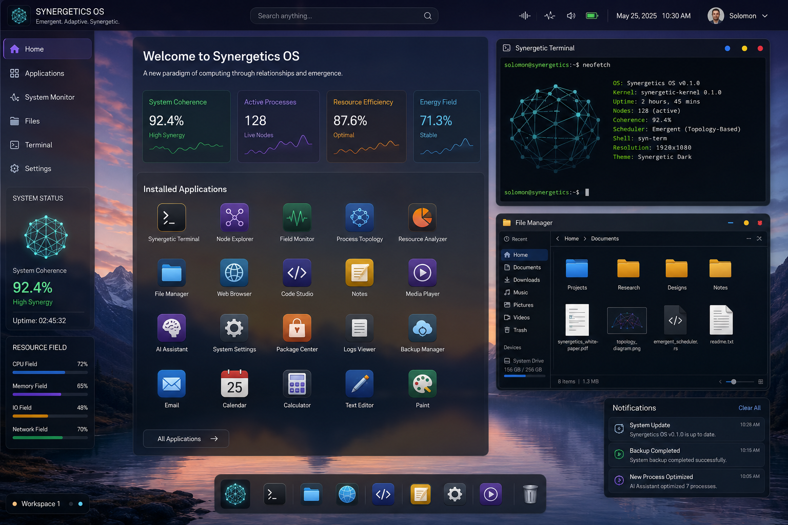
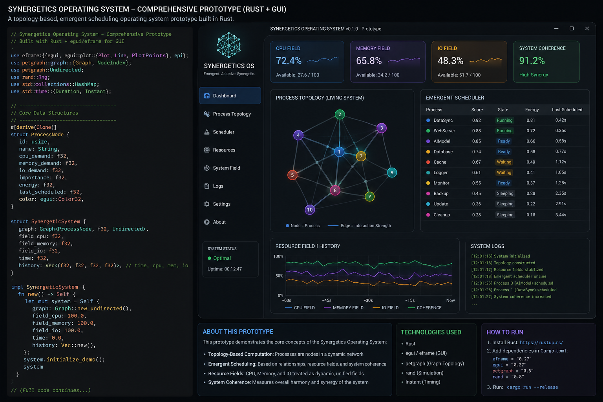
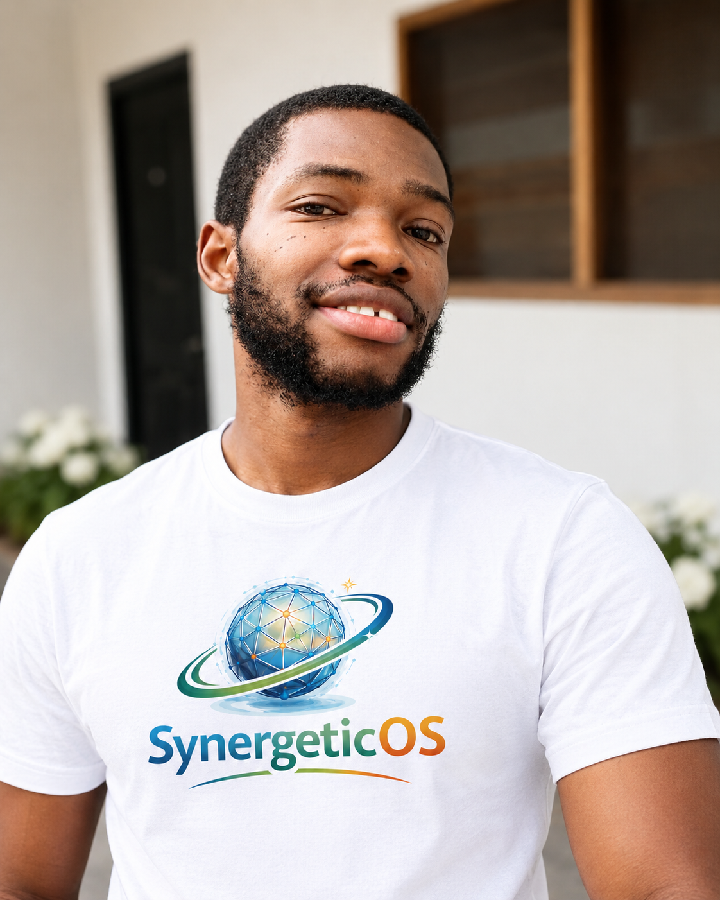

Rethinking Operating System Architecture Through Synergetics
The Synergetics Operating System (SOS) is an experimental research and development initiative exploring how geometric relationships, topology-based models, adaptive resource management, and emergent optimization might inform a different approach to operating-system architecture.
Inspired by Buckminster Fuller's Synergetics, SOS investigates how relationships among processes, computational resources, and system components could be modeled to support adaptive coordination and resource-aware scheduling.
Topology-Based Modeling
Explore whether relationships and dependencies among processes, resources, and system components can be represented through connected structures.
Resource-Field Abstraction
Investigate a proposed model for representing resource availability and distribution across CPU, memory, I/O, and other system capacities.
Adaptive Scheduling
Explore scheduling decisions that respond to workload characteristics, resource conditions, and relationships among competing tasks.
Emergent Coordination
Investigate whether coordinated local decisions can produce useful system-wide behavior under defined workloads.
What is the Synergetics Operating System?
The Synergetics Operating System is an experimental approach to operating-system architecture that explores the application of geometric relationships, topology-based modeling, and systems thinking to the coordination of computational resources.
The central research question is whether relationships among processes, workloads, and available resources can be represented in ways that help inform adaptive scheduling and resource-management decisions.
Rather than treating the project as an established alternative to conventional operating systems, SOS investigates a conceptual framework through research, software simulation, documentation, and iterative prototyping.
The project draws intellectual inspiration from Buckminster Fuller's Synergetics, particularly the study of geometric relationships, interconnected structures, synergy, and the pursuit of doing more with less.
“SOS is an ongoing experiment. Its architectural ideas, scheduler simulation, and prototype require continued implementation, testing, technical review, and empirical evaluation.”
Why Explore a New Approach to Operating System Design?
Modern operating systems already contain sophisticated mechanisms for process scheduling, memory management, input/output coordination, security, and resource allocation. However, the complexity of coordinating workloads and resources continues to provide opportunities for research into new models and algorithms.
The Synergetics Operating System is motivated by a specific question: could a topology-oriented, relationship-aware model provide a useful additional perspective on the way system components coordinate and compete for resources? SOS does not assume that conventional operating systems are inherently inefficient. Instead, it seeks to explore a different conceptual framework and determine whether it offers measurable advantages under particular conditions.
Understanding Relationships Between Processes and Resources
Computational workloads do not operate in isolation. They compete for CPU time, memory, storage access, network capacity, and other resources. SOS explores whether modeling these relationships explicitly could help inform scheduling and coordination decisions.
Investigating Adaptive Resource Management
System conditions change as workloads arrive, finish, block, or compete for limited capacity. SOS investigates whether a relationship-aware architecture could support decisions that adapt to changing resource availability and workload requirements.
Exploring Geometry and Topology in Computing
Geometric and topological models offer ways of describing structure, connectivity, and relationships. SOS explores how these ideas might be used as abstractions in systems design, while recognizing that practical benefits must be established through implementation and testing.
Studying Emergent System Behavior
Interactions among individual processes and resource-allocation decisions can influence system-wide behavior. SOS investigates whether carefully designed local decisions can contribute to useful global coordination.
Pursuing Resource Efficiency (Ephemeralization)
Ephemeralization, a concept associated with Buckminster Fuller, emphasizes doing more with less. In SOS, this serves as a motivation to investigate resource utilization, scheduling overhead, responsiveness, and adaptability. Any claimed improvement must be demonstrated through reproducible experiments and appropriate comparisons.
“The objective is not to declare a new operating system superior before it is tested. The objective is to formulate a different architectural hypothesis, implement experiments, measure outcomes, and refine the design based on evidence.”
From Geometric Relationships to Systems Architecture
Buckminster Fuller developed Synergetics as a framework for exploring geometry, interconnected relationships, and the behavior of systems. His work encouraged people to think beyond isolated components and examine how structures and relationships contribute to the behavior of a whole.
The Synergetics Operating System takes inspiration from this style of systems thinking and asks how related ideas might inform computing architecture. For SOS, the connection is exploratory rather than a claim that Fuller's work directly specifies an operating system. Geometric structure and systems thinking can inspire new models, but their practical value must be demonstrated through algorithms, implementation, and testing.
Synergy
Explore how interactions between components influence the behavior of a system, where collective performance transcends isolated parts.
Geometric Relationships
Use geometric structures as inspiration for representing connections, multidimensional distances, and relational organization.
Ephemeralization
Investigate whether resource utilization and computational work can be improved by doing progressively more with less resource overhead.
Whole-System Thinking
Examine the deep feedback loops between workloads, physical resources, scheduling decisions, and overall system behavior.
Conceptual Systems Perspective Comparison
Examining conventional paradigms alongside proposed synergetic abstractions
Conventional Systems Perspective
- Linear task queues, time-slice round-robin slices, and priority runqueues
- Independent CPU, memory, and I/O subsystem tracking and quotas
- Discrete metric polling, static heuristics, and isolated policy trees
- Direct explicit IPC dependencies, mutexes, and synchronization locks
Proposed SOS Research Perspective
- Connected process and resource topological structures and relationship graphs
- Unified resource-field abstraction mapping availability as spatial density
- Adaptive scheduling hypotheses evaluated dynamically against topological proximity
- Continuous system feedback loops driving emergent self-coordination
* Note: This is an architectural conceptual comparison. Modern production operating systems also employ dependency graphs, feedback mechanisms, adaptive scheduling, and resource-aware algorithms. The SOS initiative explores whether Fuller's topological principles offer a novel mathematical formulation.
A Relationship-Aware Model of Computing
The proposed SOS architecture investigates whether a topology-based model of processes and computational resources can inform adaptive system coordination. Its components are conceptual models under development rather than a declaration that all elements are already implemented.
Exploring Scheduling Through Rust Simulation
Translating conceptual topology and field hypotheses into reproducible, benchmarkable Rust algorithms.
As part of developing the Synergetics Operating System concept, Solomon Yaw Adeklo developed a Rust-based scheduler simulation to explore aspects of the proposed scheduling approach.
The simulation represents an important step in translating architectural ideas into executable experiments. A simulation can help investigate algorithms, model workload conditions, examine resource-allocation behavior, and identify questions that need further testing before deeper operating-system integration is attempted.
The scheduler simulation is an ongoing development effort. Its actual behavior, supported features, assumptions, and results must be established by inspecting the source code and running appropriate tests.
Rust Scheduler Simulation Repository
// Synergetics Operating System - Scheduler Simulation
// Topological task relationship & resource field modeling
pub struct TaskNode {
pub id: usize,
pub priority: u32,
pub compute_demand: f64,
pub memory_demand: f64,
pub topology_coords: [f64; 3],
pub dependencies: Vec<usize>,
}
pub struct ResourceField {
pub cpu_density: f64,
pub memory_gradient: f64,
pub io_saturation: f64,
}
impl SynergeticScheduler {
pub fn evaluate_affinity(
&self,
task: &TaskNode,
field: &ResourceField
) -> f64 {
// Calculate synergetic fit score based on topology distance
let dist_sq = task.topology_coords.iter().map(|c| c * c).sum::<f64>();
let resource_fit = field.cpu_density / (1.0 + task.compute_demand);
resource_fit * (1.0 / (1.0 + dist_sq.sqrt()))
}
}From Research to an Experimental Prototype
Grounding theoretical concepts in an active codebase.
The Synergetics Operating System prototype is an ongoing attempt to translate the project's research ideas into an evolving software implementation.
The prototype provides a development environment in which architectural concepts can be explored, implementation choices examined, and the relationship between the proposed design and practical software engineering investigated.
Its capabilities and scope will evolve as the work progresses. The existence of a prototype does not mean that SOS is already a complete, independently bootable, production-ready operating system.
Further development, technical review, testing, documentation, and evaluation are required to determine which concepts can be implemented effectively and what limitations remain.
Implementation Capability Status
Transparent distinction between verified implementation and ongoing research goals.
| Subsystem Component | Status Category |
|---|---|
| Rust Scheduler Simulation Harness | Verified Implemented |
| Theoretical Architecture Documentation | Verified Published |
| Experimental Prototype Scaffolding | In Progress |
| Topological Process Graph Engine | In Progress |
| Continuous Resource Field Abstraction | Proposed Model |
| Kernel-Level Hardware Bootloader | Longer-Term Research |
* Features are reviewed and tracked publicly on the official GitHub organization.
Original OS UI/UX Concepts
Visualizing how geometric coordination and resource awareness might inform future human-computer interfaces.

Concept 01 — Synergetic Desktop Environment
An exploration of how geometric organization and resource awareness might inform a future desktop experience.

Concept 02 — Adaptive Resource and Topology Monitor
A proposed interface for exploring relationships among workloads, computational resources, and scheduling decisions.
These images are conceptual UI/UX designs created to communicate the project's visual direction. They do not demonstrate that all depicted features have been implemented.
Meet the Founder
The motivation, research journey, and transparent background behind the Synergetics Operating System concept.

Solomon Yaw Adeklo
Founder and Originator of the Synergetics Operating System Concept
Solomon Yaw Adeklo is a Ghanaian software developer and the originator of the Synergetics Operating System concept. His work explores how ideas inspired by Buckminster Fuller's Synergetics, geometric relationships, and systems thinking might contribute to new approaches to operating-system architecture.
The concept behind SOS emerged from Solomon's interest in applying systems thinking and the principle of ephemeralization—the pursuit of doing more with less—to the organization of computational resources. His vision is to investigate whether topology-based models, adaptive resource management, and emergent optimization can provide a useful framework for exploring system coordination.
Solomon approaches this project from an application-level software development background rather than a professional career in operating-system or kernel development. He does not present himself as an experienced kernel engineer. Instead, he has pursued the project as an interdisciplinary research and development effort, using programming experiments, architectural exploration, technical documentation, and iterative prototyping to investigate his ideas.
To support this work, Solomon has used AI-assisted prompt engineering tools, including ChatGPT, to explore implementation approaches, refine system documentation, examine architectural alternatives, assist with code development, and support the creation of a Rust scheduler simulation and an evolving operating-system prototype.
AI tools have served as research and development aids. Their use does not remove the need for human judgment, code review, testing, validation, and independent technical assessment. The architecture and prototype remain ongoing work.
Solomon's approach reflects a commitment to exploring an ambitious technical idea through incremental development, transparent documentation, and open-source collaboration. Rather than claiming that SOS has already solved the challenges of operating-system design, the project seeks to turn a conceptual vision into testable software and evaluate its potential through further research.
Research, Documentation, and Technical Exploration
SOS is being developed through conceptual research, technical documentation, simulation, and iterative prototyping. These materials describe the project's proposed architecture and development direction. Readers should distinguish documented proposals from independently verified experimental results.
SYNERGETIC OPERATING SYSTEM (SOS): A Topology-Based Emergent and Resource-Field Operating System Architecture
Explore the research publication describing the proposed SOS architecture, including its topology-based perspective, emergent coordination concepts, and resource-field model.
A Comprehensive Systems Documentation of Synergetics Operating System
Read the project's systems documentation for a more detailed account of its architectural concepts, system organization, and development direction.
Help Explore the Future of Synergetic Computing
The Synergetics Operating System is an evolving open-source research initiative. Its long-term direction depends on continued experimentation, critical review, technical contributions, and evidence-based refinement.
Developers, researchers, designers, students, and systems enthusiasts are invited to explore the project, examine the source code, review the documentation, and contribute where their skills and interests align.
Rust Programming
Simulation development, memory-safe data structures, and concurrency benchmarking.
OS Architecture
Kernel design trade-offs, virtual memory mappings, and microkernel abstractions.
Scheduling Algorithms
Algorithmic heuristics, real-time priority guarantees, and contention mitigation.
Graph Theory & Topology
Mathematical formulations of geodesic distances, clustering, and network flow.
Resource Models
Continuous field density calculations across heterogeneous computing cores.
UI/UX Design
Geometric data visualizations, interactive system telemetry, and shell environments.
Testing & Benchmarking
Synthetic workload creation, trace generation, and empirical performance metrics.
Technical Writing
System documentation, research paper reviews, and clear architectural specs.
“Explore the code. Review the research. Contribute to the experiment.”
Join the open discussions and code reviews on the official GitHub organization.
The Road Ahead
The SOS roadmap represents a proposed development direction. Milestones and priorities may change as implementation, testing, and research reveal new opportunities or limitations.
Stage 1 — Conceptual Research
- Define the architectural motivation and foundational principles.
- Document the proposed topology and resource-field models.
- Identify key assumptions that need rigorous experimental testing.
Stage 2 — Scheduler Simulation
- Continue developing the Rust scheduler simulation.
- Investigate workload and resource-model assumptions under synthetic stress.
- Establish reproducible testing and benchmarking procedures.
Stage 3 — Prototype Development
- Continue evolving the software prototype.
- Verify implemented features and publish reproducible build instructions.
- Clarify the boundaries between the prototype, simulation, and any future system-level implementation.
Stage 4 — Evaluation and Refinement
- Define meaningful experiments and comparison baselines against standard CFS/FIFO policies.
- Measure scheduling behavior and resource utilization where applicable.
- Document limitations and refine the architecture based on evidence.
Stage 5 — Longer-Term Systems Research
- Investigate the feasibility of deeper system-level integration.
- Explore security, reliability, compatibility, and deployment considerations.
- Identify the domain expertise and engineering work needed for more advanced development.
Frequently Asked Questions
Clear answers regarding the project's scope, origins, methodology, and realistic expectations.